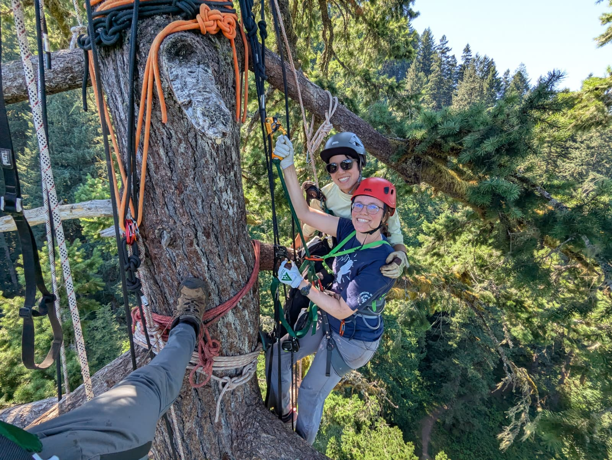

Things to Do!
With any extra time that you have, here are our recommendations! :)
Food & Spaces in the Park to Hang Out
- South Falls Cafe - Grab-n-go items and beverages in the historic South Falls Lodge with cozy seating
- Bigleaf Market & Grill - Food, drinks, and a cozy space to eat by the fire. We recommend the salads if you'd like something fresh to eat while in the park :)
- South Falls Day Use Area - Lawns, picnic shelters, picnic tables, etc.
- North Canyon Day Use Area - picnic tables, North Rim Trail acess, North Falls viewpoint
Silver Falls Tree Climbing

For anyone looking for an adventure, Silver Falls Tree Climbing is a great option! Our good friend Leo runs this business, and we had a great time in the trees last summer. To learn more and book your adventure, click the button below!
Trail of Ten Falls
This beautiful hike begins from the South Falls Day Use area. This is where we will hike as a group on Sunday, but if you would like to do some exploring on your own, please take advantage of this great hike, and easy access to amazing waterfalls! Follow the guidance on the map to choose your path, and happy hiking!

Backcountry & All State Park Hiking Trails
If you've already explored the Trail of Ten Falls, or if you would like to hike a bit farther into the park, use the map below to help you create your plan for the weekend! We hope you will explore to your heart's content while in the area. :)

Mountain Biking & Trail Running
While we can't share personal recommendations, Silver Falls State Park is also full of many opportunities to bike, mountain bike, and trail run. Use the link below to learn more about different opportunities in the park and to learn about specific trail conditions and crowd-sourced recommendations.